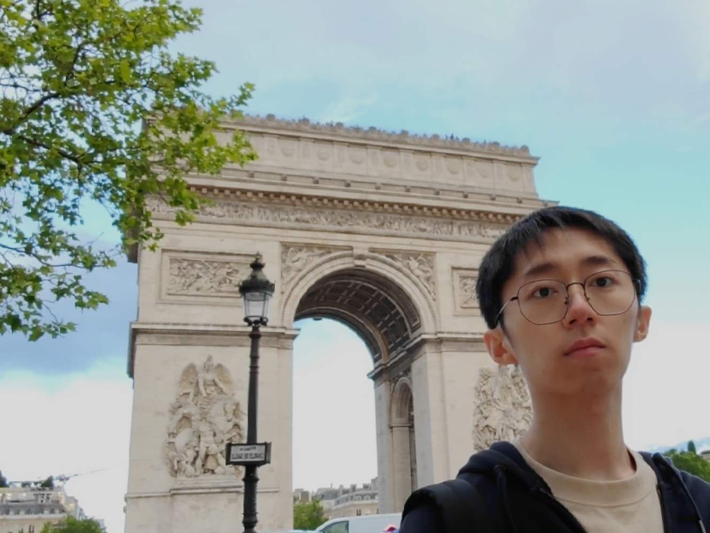

Guorui Xie
Assistant Researcher/Professorxiegrr(AT)gmail.com
About Me | News | Selected Publication | Services
About Me
I'm Guorui Xie (谢国锐 in Chinese). I received my BEng (2019) and PhD (2024) degrees from SYSU and Tsinghua(China), respectively. I was also a CSC-funded research visitor at Politecnico di Milano (worked with Gianni Antichi in Italy, 2023~2024).
Now I am an Assistant Researcher (PhD supervisor) at Pengcheng Laboratory(PCL, China National Lab). My research interests are: programmable network, P4, AI/LLM-based network applications.
我在2019年本科毕业于中山大学、2024年博士毕业于清华大学，曾获国家留学基金资助海外联培（2023~2024）、腾讯青云计划。目前是鹏城国家实验室（PCL）助理研究员、博导（清华智能网络团队），主要研究可编程网络、P4技术、AI/LLM的网络应用等。
News 
- 招收鹏城-中山/西电联培博（1~2名，26年入学）、科研实习生（可推免清华，长期），本人及协助指导的学生都曾获大厂人才及华五推免offer，欢迎同学们联系！
- 招收鹏城实验室研究人员及博后（长期），博后年薪56万+（海外回国博后68万+）。
Selected Publication
I have published ~20 papers in INFOCOM, TON, TDSC, TC, WWW, ATC, etc. Most are available in my GoogleScholar and codes are in GitHub.
-
Intelligent In-Network Attack Detection on Programmable Switches with Soterv2
G. Xie, Q. Li, C. Cui, et al. TDSC2024 (CCF A). -
Generating neural networks for diverse networking classification tasks via hardware-aware neural architecture search
G. Xie, Q. Li, Z. Shi, et al. TC2023 (CCF A). -
Empowering in-network classification in programmable switches by binary decision tree and knowledge distillation
G. Xie, Q. Li, G. Duan, J. Lin, et al. ToN2023 (CCF A). -
Mousika: enable general in-network intelligence in programmable switches by knowledge distillation
G. Xie, Q. Li, Y. Dong, G. Duan, et al. INFOCOM2022 (CCF A).
Services
TPC Member of ACM CoNEXT26Reviewer of IEEE JSAC, Computer Networks, WWW25
CCF分布式计算与系统、互联网专业委员会执行委员